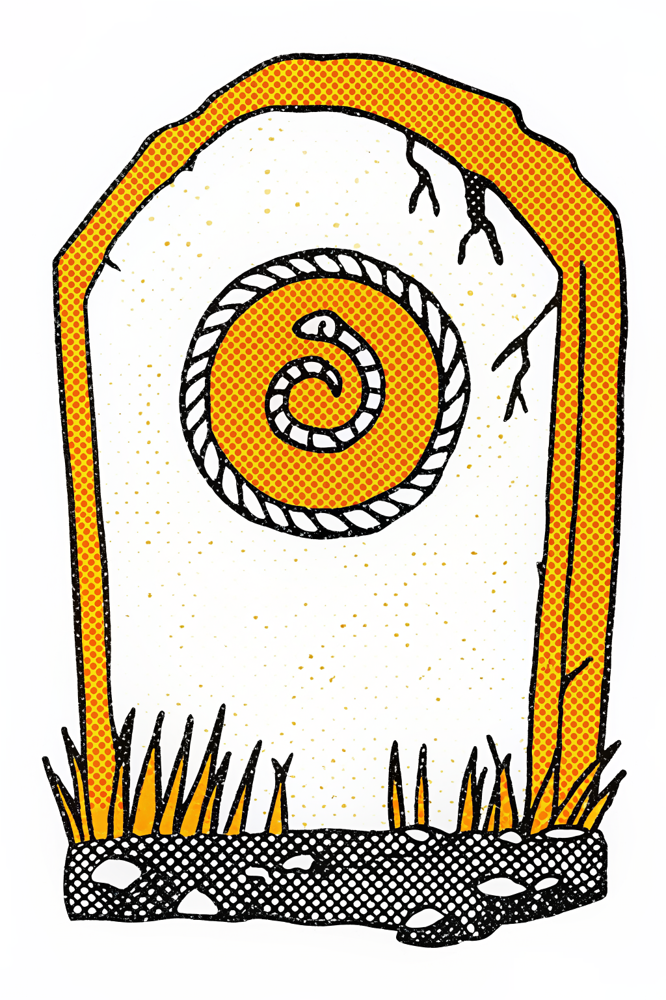
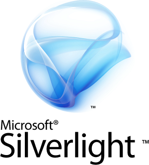
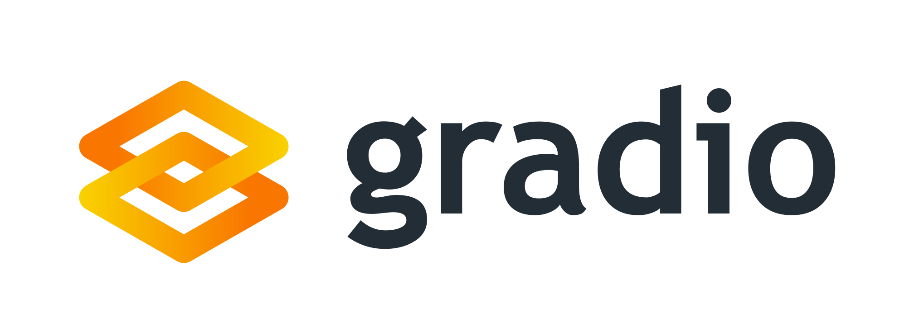

From Graveyard to Glory
Production Python in the Browser
PyCon US 2026
The Graveyard

| Years | Project | Approach |
|---|---|---|
| 2009-2015 |  PyJS / Pyjamas PyJS / Pyjamas |
Transpiler + Qt/GTK widgets |
| 2010-2021 |  Silverlight / IronPython |
Browser plugin |
| 2013-2019 |  PyPy.js PyPy.js |
Compile PyPy to JS |
| 2013-2021 | RapydScript | Python-like to JS compiler |
Still Kicking
| Years | Project | Approach |
|---|---|---|
| 2009-present |  |
JS reimplementation, still chasing Python 3 |
| 2014-present | Runtime transpiler, maintained (Python 3.14), no C extensions | |
| 2016-present | Python-to-JS transpiler, active (v3.9.4) |
Alive, but still niche.
Built on
| Project | What | Link |
|---|---|---|
| Full Jupyter in browser (official subproject, Feb 2026) | jupyterlite.readthedocs.io | |
| Reactive notebooks, WASM export | marimo.io | |
 Gradio-Lite |
ML demos in browser (Hugging Face) | huggingface.co |
| Stlite | Streamlit → WASM, PWA, Electron | github.com/whitphx/stlite |
Common thread: Mostly directly about Python in the user’s browser.
Gap 1: Playwright + CI
Browser Python apps need browser tests.
- Playwright: E2E across 3 browsers
- GitHub Actions: CI on every push
- Pre-commit hooks: catch problems before they hit CI